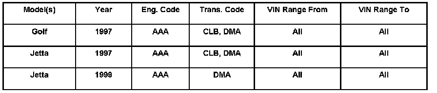
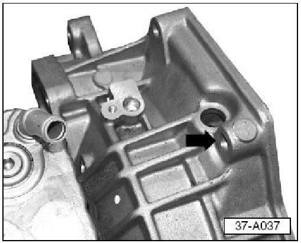
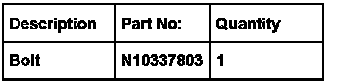

A/T - Mounting Bolt Guidelines Upon A/T Replacement
ConditionAutomatic Transmission Replacement, Installing NEW Upper Mounting Bolt
When installing a replacement 4 speed automatic transmission (see below), engine damage can occur if incorrect upper mounting bolt is used.

37 07 01 Jan.8, 2007, 2002402, Supersedes Technical Bulletin Group 37 number 00-01 dated July 13, 2000 due to inclusion into ElsaWeb.
Technical Background
Not applicable.
Production Solution
As a running change, the upper bell housing mounting flange width on automatic 4 speed transmissions has been reduced by 25 mm.
Affected transmissions:
Transmission Code Part Number
CLB 01M300035E(X)
DMA 01M300037H(X)
Service
When installing a replacement automatic 4 speed transmission (with reduced upper bell housing mounting flange width) to a vehicle equipped with a VR6 engine (eng.code AAA):

- Install new bolt, Part No: N10337803 (M12 x 55mm) into upper rear mounting hole (arrow) to prevent damage to the engine.
NOTE: Failure to use correct bolt in upper rear mounting hole will cause damage to engine block.
Warranty
Information only.
Required Parts and Tools

Tip: Part number(s) are for reference only.Always see ETKA for the latest part(s) information.